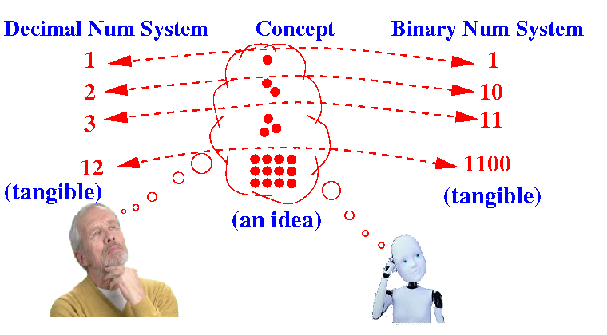

Converting between decimal and binary numbers
-
Humans are
accostumed to use the
decimal number system to
represent
integer (= whole) values
-
In contrast:
computer
must use
the
binary number system...
- Therefore,
a
fundamental skill in
CS255 is
know
how to
convert between
binary
⇆ decimal numbers:
Examples:
Given: 10101 in binary --> the decimal number
for the same value = ???
Given: 25 in decimal --> the binary number
for the same value = ???
|
|
Converting between decimal number representation
and binary number representation
Problem Description: we
have
2 different representations for
(unsigned) numerical values:

How do we
convert between
these 2 different
representations
How to
convert from
binary representation ⇒
decimal representation
-
To convert the
binary representation to
the decimal representation
(for the same value),
do the following:
- Compute the
decimal sum of
the value of each
(binary) digit
multiplied by its
"position factor"
|
- Example: Convert the
binary number
01011001 to
a decimal number
Worked out
example:
Digits: 0 1 0 1 1 0 0 1
Position factor: 128 64 32 16 8 4 2 1
--------------------------------
64 + 16 +8 + 1 = 89
Answer: 01011001 binary = 89 decimal
|
|
How to
convert from
decimal
representation ⇒
binary
representation
Storing integer (whole) values inside a computer program
Background information on
storing
integer (whole) values:
- Computer
memory was
a
scarce resource
(used to be very expensive !)
- Traditionally,
programming language provided
integer representations of
different lengths
for different needs
-
Shorter representations to
minimize
storage requirements
-
Longer representations to
maximize
accuracy requirements
|
Storing integer (whole) values inside a computer program
Program data types to
represent (store)
integer (whole) values:
- byte:
uses 1 byte of memory
(i.e.: 8 bits binary number)
- short:
uses 2 bytes of memory
(i.e.: 16 bits binary number)
- int:
uses 4 bytes of memory
(i.e.: 32 bits binary number)
- long:
uses 8 bytes of memory
(i.e.: 64 bits binary number)
|
Important note: the
computer will
only use these
lengths !!!
Storing integer (whole) values inside a computer program
How to store (= represent)
the (decimal) value 5 in
different data types:
- The (decimal) value 5
represented (= stored) by
the byte
data type is:
- The (decimal) value 5
represented (= stored) by
the short
data type is:
- The (decimal) value 5
represented (= stored) by
the int
data type is:
00000000000000000000000000000101
|
|
So the
leading zeros in a
binary number for the
computer is
very important
when
stored in
memory !!!
(When the binary number is not stored, we usually ignore leading zeros)
Quiz 1 - Applying
what you have learned so far
- What bit pattern is
stored
in
memory variable
x:
|
Quiz 1 - Applying
what you have learned so far
- What bit pattern is
stored
in
memory variable
x:
Answer:
Convert 6 to binary: 6
2 ----- 0
3
2 ----- 1
1
2 ----- 1
0
The binary number is: 110 binary
Because x is a byte variable x contains: 00000110
|
|
Quiz 2 - Applying
what you have learned so far
- What bit pattern is
stored
in
memory variable
x:
|
Quiz 2 - Applying
what you have learned so far
- What bit pattern is
stored
in
memory variable
x:
Answer:
The binary number is: 110 binary
Because x is a int variable x contains:
00000000000000000000000000000110
(32 bits)
|
|
❮
❯